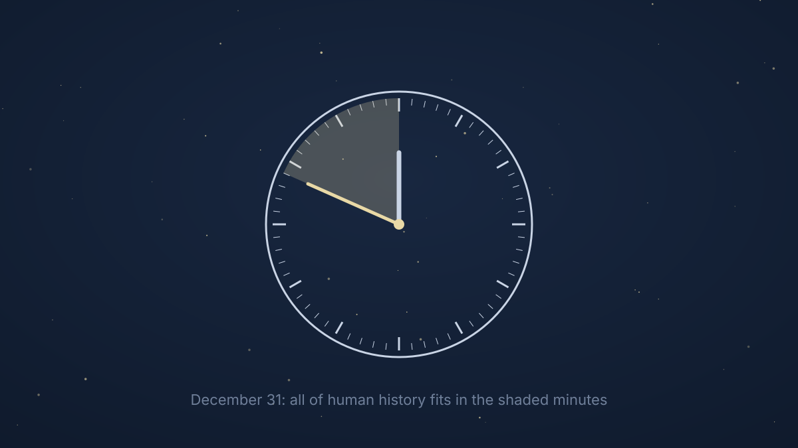

Look Up
Try something tonight. Walk away from the porch light, let your eyes adjust, and look up. Nearly every point of light you see is a distant sun, and the ones you can see are a tiny sample of the at least 100 billion stars in your galaxy alone.
For nine chapters I have asked Americans to think harder: about offense and feelings, intelligence, faith and contempt, men and women, opportunity and wealth, patience, and the courage to change your minds. I have argued, and sometimes I have been sharp. This last chapter asks for something different. It asks you to see yourselves as I see you: small. And to discover that feeling small is the beginning of wisdom, not the end of meaning.
How Small, Exactly?
Start with space. Your Milky Way contains at least 100 billion stars, and the observable universe contains at least 100 billion galaxies (NASA). One 2016 study put the number at two trillion (National Geographic). And the observable universe is only the part whose light has had time to reach you. What lies beyond, even I cannot tell you.

Now time. The universe is about 13.8 billion years old (NASA). Your Earth and solar system formed around 4.6 billion years ago. The oldest known fossils of your species, found at Jebel Irhoud in Morocco, are about 300,000 years old (Smithsonian).
Those numbers are too large to feel, so shrink them. Squeeze the whole history of the universe into one calendar year, beginning at midnight on January 1 and ending at midnight on December 31.
| Event | Real time ago | On the one-year calendar |
|---|---|---|
| The universe begins | 13.8 billion years | January 1, 12:00 a.m. |
| Earth forms | 4.6 billion years | Early September |
| Your species appears | 300,000 years | December 31, about 11:49 p.m. |
| An 80-year human life | 80 years | The last fifth of a second |
Everything every human has ever done, every war, every cathedral, every love story, fits in the last eleven minutes of that year. The entire history of the United States fits in its final second.
And the calendar does not stop at midnight. NASA scientists expect that several billion years from now the Sun will expand, swallowing Mercury and Venus and possibly Earth itself (NASA). Between now and then lies a span of time vastly longer than your species has existed. How many generations of thinking beings will live in it, yours or others, no one knows.
What Smallness Teaches
There are two ways to react to that calendar. One is despair: if I am a blink in the last second, nothing I do matters. The other is humility: if I am a blink in the last second, then nothing I am fighting about is as important as I think, and the few things that truly matter deserve my full attention.
I have watched your species choose both. Reason favors the second.
Consider what smallness does to every quarrel in this book. The American who sneers at his neighbor's religion, the voter who despises the other party, the person nursing an insult for decades: each is spending part of a fifth of a second on contempt. Against 13.8 billion years, your certainties look smaller, your grudges sillier, and your chance to be decent more precious, precisely because it is so brief.
Smallness also reveals how little you know. Every generation of your species was sure it understood the world, and every one was partly wrong, as Chapter 9 showed. Yours will be no different. Your descendants will look at your confident opinions the way you look at the doctors who refused to wash their hands. That should not paralyze you. It should make you gentle with one another while you figure things out.
Three Rules for a Speck
You cannot control the universe or the centuries. You can barely control your own tempers. But within your fraction of a second, three things are fully in your power.
1. Be kind. Kindness costs almost nothing and compounds like the savings in Chapter 8. A patient word to a stranger, a second chance for someone who failed, respect for a person whose faith or politics you don't share: each is a small deposit in the world your children inherit. Kindness is not weakness. It is what strength looks like when it has nothing to prove.
2. Do no harm. Before you act, ask who pays for it, not just today and not just the people in the room. The debt you run up, the land you spoil, the trust you break, the cruelty you model for a child: someone downstream always pays. A great deal of harm is done by people who simply never stopped to ask.
3. Leave it better. Every one of you inherited roads you didn't build, medicines you didn't discover, freedoms you didn't win, and soil, water, and air you didn't make. The only honest repayment is forward. Plant the tree whose shade you'll never sit in. Teach what you were taught. Leave the family, the community, the country, and the planet stronger and cleaner than you found them.
None of these rules belongs to the American left or right, to believers or unbelievers, to men or women. One who wants to conserve and one who wants to progress can both sign on. Stewardship is the common ground beneath every argument in this book.
A Purpose You Can Share
I cannot tell you the purpose of your lives. Your faiths and philosophies answer that question differently, and this book has argued you should answer it freely. But here is a purpose nearly all of you can share: to leave a better place for your children, and your children's children, and whoever comes after them across a span of time you cannot imagine.
You are specks. So am I. Specks are all there have ever been. Be kind ones.
Sources
- NASA, "What Is the Universe?"
- NASA Science, on the age of Earth and the Sun's future
- National Geographic, "Galaxies, explained"
- Smithsonian, "An Evolutionary Timeline of Homo Sapiens"
The one-year calendar is calculated from the NASA and Smithsonian figures above.